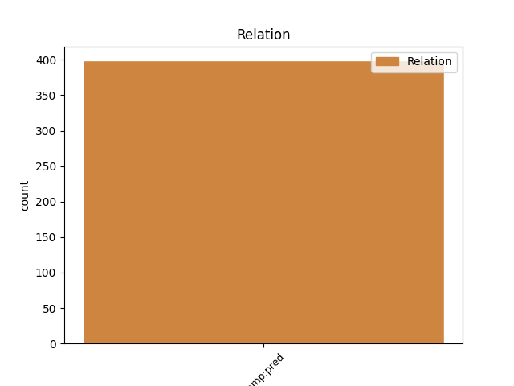
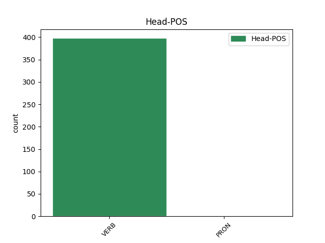

Distribution of features within this leaf


Agreement Rules sorted by frequency.
- When the dependent token is the predicative complements(comp:pred) of the head token, and the dependent token is VERB.
1 و _ _ _ _ 0 _ _ _
2 أشار _ _ _ _ 0 _ _ _
3 العيار _ _ _ _ 0 _ _ _
4 الى _ _ _ _ 0 _ _ _
5 استمرار _ _ _ _ 0 _ _ _
6 المساعدات _ _ _ _ 0 _ _ _
7 و _ _ _ _ 0 _ _ _
8 في _ _ _ _ 0 _ _ _
9 جميع _ _ _ _ 0 _ _ _
10 المجالات _ _ _ _ 0 _ _ _
11 الغذائية _ _ _ _ 0 _ _ _
12 و _ _ _ _ 0 _ _ _
13 الدوائية _ _ _ _ 0 _ _ _
14 و _ _ _ _ 0 _ _ _
15 الصحية _ _ _ _ 0 _ _ _
16 و _ _ _ _ 0 _ _ _
17 غير _ _ _ _ 0 _ _ _
18 ها _ _ _ _ 0 _ _ _
19 موضحا _ _ _ _ 0 _ _ _
20 أن _ _ _ _ 0 _ _ _
21 ما _ _ _ _ 0 _ _ _
22 يتعلق _ _ _ _ 0 _ _ _
23 ب _ _ _ _ 0 _ _ _
24 وزارة _ _ _ _ 0 _ _ _
25 الكهرباء _ _ _ _ 0 _ _ _
26 و _ _ _ _ 0 _ _ _
27 الماء _ _ _ _ 0 _ _ _
28 ف _ _ _ _ 0 _ _ _
29 إن _ _ _ _ 0 _ _ _
30 ها _ _ _ _ 0 _ _ _
31 لا _ _ _ _ 0 _ _ _
32 تزال زَال VERB VIIA-3FS-- Aspect=Imp|Gender=Fem|Mood=Ind|Number=Sing|Person=3|VerbForm=Fin|Voice=Act 0 _ _ _
33 تقدم أَقدَم VERB VIJA-3FS-- Aspect=Imp|Gender=Fem|Mood=Jus|Number=Sing|Person=3|VerbForm=Fin|Voice=Act 32 comp:pred _ Gloss=approach,be_undertaken,tackle,undertake|LTranslit=ʾaqdam|Root=q_d_m|Translit=tuqdim|Vform=تُقدِم
34 المياه _ _ _ _ 0 _ _ _
35 العذبة _ _ _ _ 0 _ _ _
36 الى _ _ _ _ 0 _ _ _
37 العراق _ _ _ _ 0 _ _ _
38 " _ _ _ _ 0 _ _ _
39 ف _ _ _ _ 0 _ _ _
40 هناك _ _ _ _ 0 _ _ _
41 أنبوب _ _ _ _ 0 _ _ _
42 يصب _ _ _ _ 0 _ _ _
43 يوميا _ _ _ _ 0 _ _ _
44 في _ _ _ _ 0 _ _ _
45 العراق _ _ _ _ 0 _ _ _
46 ب _ _ _ _ 0 _ _ _
47 طاقة _ _ _ _ 0 _ _ _
48 مليون _ _ _ _ 0 _ _ _
49 و _ _ _ _ 0 _ _ _
50 نصف _ _ _ _ 0 _ _ _
51 المليون _ _ _ _ 0 _ _ _
52 جالون _ _ _ _ 0 _ _ _
53 " _ _ _ _ 0 _ _ _
54 . _ _ _ _ 0 _ _ _
1 و _ _ _ _ 0 _ _ _
2 استعمال _ _ _ _ 0 _ _ _
3 أوصاف _ _ _ _ 0 _ _ _
4 الله _ _ _ _ 0 _ _ _
5 تعالي _ _ _ _ 0 _ _ _
6 في _ _ _ _ 0 _ _ _
7 وصف _ _ _ _ 0 _ _ _
8 المعشوقة _ _ _ _ 0 _ _ _
9 و _ _ _ _ 0 _ _ _
10 إسناد _ _ _ _ 0 _ _ _
11 أفعال _ _ _ _ 0 _ _ _
12 الله _ _ _ _ 0 _ _ _
13 إلي _ _ _ _ 0 _ _ _
14 ها _ _ _ _ 0 _ _ _
15 ما _ _ _ _ 0 _ _ _
16 يكاد كَاد VERB VIIA-3MS-- Aspect=Imp|Gender=Masc|Mood=Ind|Number=Sing|Person=3|VerbForm=Fin|Voice=Act 0 _ _ _
17 يكون كَان AUX VIIA-3MS-- Aspect=Imp|Gender=Masc|Mood=Ind|Number=Sing|Person=3|VerbForm=Fin|Voice=Act 16 comp:pred _ Gloss=be,exist,is|LTranslit=kān|Root=k_w_n|Translit=yakūnu|Vform=يَكُونُ
18 كفراً _ _ _ _ 0 _ _ _
19 صريحاً _ _ _ _ 0 _ _ _
20 . _ _ _ _ 0 _ _ _
21 . _ _ _ _ 0 _ _ _
Disagree Examples:
1 و _ _ _ _ 0 _ _ _
2 وصف _ _ _ _ 0 _ _ _
3 الضجة _ _ _ _ 0 _ _ _
4 التي _ _ _ _ 0 _ _ _
5 اثيرت _ _ _ _ 0 _ _ _
6 حول _ _ _ _ 0 _ _ _
7 امكان _ _ _ _ 0 _ _ _
8 سحب _ _ _ _ 0 _ _ _
9 الاتحاد _ _ _ _ 0 _ _ _
10 الاسيوي _ _ _ _ 0 _ _ _
11 البطولة _ _ _ _ 0 _ _ _
12 من _ _ _ _ 0 _ _ _
13 لبنان _ _ _ _ 0 _ _ _
14 ب _ _ _ _ 0 _ _ _
15 أن _ _ _ _ 0 _ _ _
16 ها _ _ _ _ 0 _ _ _
17 " _ _ _ _ 0 _ _ _
18 كانت _ _ _ _ 0 _ _ _
19 ايجابية _ _ _ _ 0 _ _ _
20 لأن _ _ _ _ 0 _ _ _
21 ها _ _ _ _ 0 _ _ _
22 احدثت _ _ _ _ 0 _ _ _
23 صدمة _ _ _ _ 0 _ _ _
24 و _ _ _ _ 0 _ _ _
25 جعلت جَعَل VERB VP-A-3FS-- Aspect=Perf|Gender=Fem|Number=Sing|Person=3|Voice=Act 0 _ _ _
26 المسؤولين _ _ _ _ 0 _ _ _
27 يدركون أَدرَك VERB VIIA-3MP-- Aspect=Imp|Gender=Masc|Mood=Ind|Number=Plur|Person=3|VerbForm=Fin|Voice=Act 25 comp:pred _ Gloss=comprehend,realize|LTranslit=ʾadrak|Root=d_r_k|Translit=yudrikūna|Vform=يُدرِكُونَ
28 خطورة _ _ _ _ 0 _ _ _
29 الوضع _ _ _ _ 0 _ _ _
30 و _ _ _ _ 0 _ _ _
31 يتحملون _ _ _ _ 0 _ _ _
32 المسؤولية _ _ _ _ 0 _ _ _
33 " _ _ _ _ 0 _ _ _
34 . _ _ _ _ 0 _ _ _
1 قد _ _ _ _ 0 _ _ _
2 تجد وَجَد VERB VIIA-2MS-- Aspect=Imp|Gender=Masc|Mood=Ind|Number=Sing|Person=2|VerbForm=Fin|Voice=Act 0 _ _ _
3 مسؤوليات _ _ _ _ 0 _ _ _
4 ك _ _ _ _ 0 _ _ _
5 العائلية _ _ _ _ 0 _ _ _
6 تزداد اِزدَاد VERB VIIA-3FS-- Aspect=Imp|Gender=Fem|Mood=Ind|Number=Sing|Person=3|VerbForm=Fin|Voice=Act 2 comp:pred _ Gloss=increase|LTranslit=izdād|Root=z_y_d|Translit=tazdādu|Vform=تَزدَادُ
7 و _ _ _ _ 0 _ _ _
8 تتراكم _ _ _ _ 0 _ _ _
9 علي _ _ _ _ 0 _ _ _
10 ك _ _ _ _ 0 _ _ _
11 . _ _ _ _ 0 _ _ _
1 لم _ _ _ _ 0 _ _ _
2 تعد _ _ _ _ 0 _ _ _
3 هذه _ _ _ _ 0 _ _ _
4 الأخبار _ _ _ _ 0 _ _ _
5 وحد _ _ _ _ 0 _ _ _
6 ها _ _ _ _ 0 _ _ _
7 تقليدية _ _ _ _ 0 _ _ _
8 ، _ _ _ _ 0 _ _ _
9 ف _ _ _ _ 0 _ _ _
10 ردود _ _ _ _ 0 _ _ _
11 الفعل _ _ _ _ 0 _ _ _
12 الاسرائيلية _ _ _ _ 0 _ _ _
13 علي _ _ _ _ 0 _ _ _
14 ها _ _ _ _ 0 _ _ _
15 أصبحت _ _ _ _ 0 _ _ _
16 تقليدية _ _ _ _ 0 _ _ _
17 أيضاً _ _ _ _ 0 _ _ _
18 ، _ _ _ _ 0 _ _ _
19 و _ _ _ _ 0 _ _ _
20 الإسرائيليون _ _ _ _ 0 _ _ _
21 ضربوا _ _ _ _ 0 _ _ _
22 فوراً _ _ _ _ 0 _ _ _
23 مقراً _ _ _ _ 0 _ _ _
24 فلسطينياً _ _ _ _ 0 _ _ _
25 خالياً _ _ _ _ 0 _ _ _
26 ، _ _ _ _ 0 _ _ _
27 ما _ _ _ _ 0 _ _ _
28 جعل جَعَل VERB VP-A-3MS-- Aspect=Perf|Gender=Masc|Number=Sing|Person=3|Voice=Act 0 _ _ _
29 جريدة _ _ _ _ 0 _ _ _
30 » _ _ _ _ 0 _ _ _
31 هاتزوفيه _ _ _ _ 0 _ _ _
32 « _ _ _ _ 0 _ _ _
33 تسخر سَخِر VERB VIJA-3FS-- Aspect=Imp|Gender=Fem|Mood=Jus|Number=Sing|Person=3|VerbForm=Fin|Voice=Act 28 comp:pred _ Gloss=ridicule,scoff_at|LTranslit=saḫir|Root=s__h_r|Translit=tasḫar|Vform=تَسخَر
34 من _ _ _ _ 0 _ _ _
35 ان _ _ _ _ 0 _ _ _
36 الجيش _ _ _ _ 0 _ _ _
37 الاسرائيلي _ _ _ _ 0 _ _ _
38 أصاب _ _ _ _ 0 _ _ _
39 أكياس _ _ _ _ 0 _ _ _
40 الرمل _ _ _ _ 0 _ _ _
41 خارج _ _ _ _ 0 _ _ _
42 المقر _ _ _ _ 0 _ _ _
43 اصابات _ _ _ _ 0 _ _ _
44 قاتلة _ _ _ _ 0 _ _ _
45 . _ _ _ _ 0 _ _ _
1 " _ _ _ _ 0 _ _ _
2 معاريف _ _ _ _ 0 _ _ _
3 " _ _ _ _ 0 _ _ _
4 ترثي رَثَى VERB VIIA-3FS-- Aspect=Imp|Gender=Fem|Mood=Ind|Number=Sing|Person=3|VerbForm=Fin|Voice=Act 0 _ _ _
5 رئيس _ _ _ _ 0 _ _ _
6 الوزراء _ _ _ _ 0 _ _ _
7 " _ _ _ _ 0 _ _ _
8 الخاسر _ _ _ _ 0 _ _ _
9 " _ _ _ _ 0 _ _ _
10 : _ _ _ _ 0 _ _ _
11 انتقل اِنتَقَل VERB VP-A-3MS-- Aspect=Perf|Gender=Masc|Number=Sing|Person=3|Voice=Act 4 comp:pred _ Gloss=move,transfer|LTranslit=intaqal|Root=n_q_l|Translit=intaqala|Vform=اِنتَقَلَ
12 من _ _ _ _ 0 _ _ _
13 جنة _ _ _ _ 0 _ _ _
14 الوحدة _ _ _ _ 0 _ _ _
15 الى _ _ _ _ 0 _ _ _
16 جحيم _ _ _ _ 0 _ _ _
17 الائتلاف _ _ _ _ 0 _ _ _
1 و _ _ _ _ 0 _ _ _
2 بلاش _ _ _ _ 0 _ _ _
3 كلام _ _ _ _ 0 _ _ _
4 ليس _ _ _ _ 0 _ _ _
5 ل _ _ _ _ 0 _ _ _
6 ه _ _ _ _ 0 _ _ _
7 لزوم _ _ _ _ 0 _ _ _
8 " _ _ _ _ 0 _ _ _
9 على _ _ _ _ 0 _ _ _
10 حد _ _ _ _ 0 _ _ _
11 تعبير _ _ _ _ 0 _ _ _
12 ه _ _ _ _ 0 _ _ _
13 إن _ _ _ _ 0 _ _ _
14 دولة _ _ _ _ 0 _ _ _
15 مثل _ _ _ _ 0 _ _ _
16 الأردن _ _ _ _ 0 _ _ _
17 التي _ _ _ _ 0 _ _ _
18 طبقت _ _ _ _ 0 _ _ _
19 اتفاقية _ _ _ _ 0 _ _ _
20 المناطق _ _ _ _ 0 _ _ _
21 الصناعية _ _ _ _ 0 _ _ _
22 المؤهلة _ _ _ _ 0 _ _ _
23 " _ _ _ _ 0 _ _ _
24 الكويز _ _ _ _ 0 _ _ _
25 " _ _ _ _ 0 _ _ _
26 وصلت _ _ _ _ 0 _ _ _
27 أرقام _ _ _ _ 0 _ _ _
28 صادرات _ _ _ _ 0 _ _ _
29 ها _ _ _ _ 0 _ _ _
30 من _ _ _ _ 0 _ _ _
31 قطاع _ _ _ _ 0 _ _ _
32 الغزل _ _ _ _ 0 _ _ _
33 و _ _ _ _ 0 _ _ _
34 النسيج _ _ _ _ 0 _ _ _
35 العام _ _ _ _ 0 _ _ _
36 الحالي _ _ _ _ 0 _ _ _
37 إلى _ _ _ _ 0 _ _ _
38 900 _ _ _ _ 0 _ _ _
39 مليون _ _ _ _ 0 _ _ _
40 دولار _ _ _ _ 0 _ _ _
41 بعد _ _ _ _ 0 _ _ _
42 مرور _ _ _ _ 0 _ _ _
43 4 _ _ _ _ 0 _ _ _
44 سنوات _ _ _ _ 0 _ _ _
45 من _ _ _ _ 0 _ _ _
46 تطبيق _ _ _ _ 0 _ _ _
47 الاتفاقية _ _ _ _ 0 _ _ _
48 بينما _ _ _ _ 0 _ _ _
49 كانت كَان VERB VP-A-3FS-- Aspect=Perf|Gender=Fem|Number=Sing|Person=3|Voice=Act 0 _ _ _
50 صادرات _ _ _ _ 0 _ _ _
51 ها _ _ _ _ 0 _ _ _
52 قبل _ _ _ _ 0 _ _ _
53 ذلك _ _ _ _ 0 _ _ _
54 لا _ _ _ _ 0 _ _ _
55 يتجاوز تَجَاوَز VERB VIIA-3MS-- Aspect=Imp|Gender=Masc|Mood=Ind|Number=Sing|Person=3|VerbForm=Fin|Voice=Act 49 comp:pred _ Gloss=disregard,exceed|LTranslit=taǧāwaz|Root=^g_w_z|Translit=yataǧāwazu|Vform=يَتَجَاوَزُ
56 50 _ _ _ _ 0 _ _ _
57 مليون _ _ _ _ 0 _ _ _
58 دولار _ _ _ _ 0 _ _ _
59 . _ _ _ _ 0 _ _ _